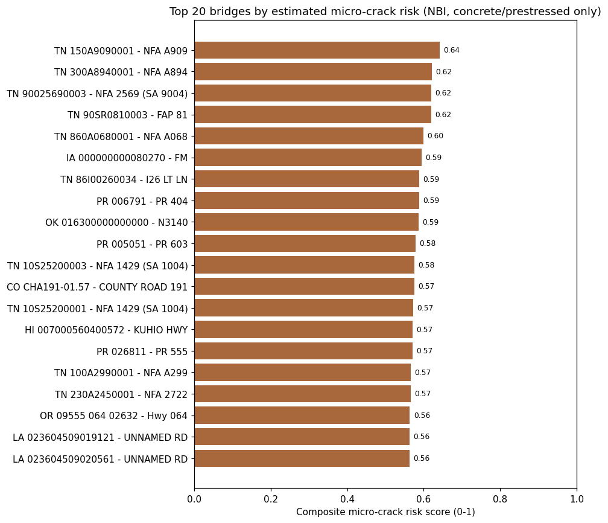

CivilSeal combines intelligent infrastructure assessment, robotic nondestructive evaluation, and biologically driven vascular repair to identify deterioration early and intervene precisely where it matters.
CivilSeal narrows large infrastructure networks down to specific structures and regions where detailed inspection and intervention matter most.
Rank structures using condition, materials, structural type, loading, age, repair history, environment, and hazard exposure.
Structural models and load paths identify regions where deterioration may be most consequential.
Deploy complementary nondestructive evaluation methods only where detailed inspection is needed.
Evaluate severity, structural significance, progression risk, and repair suitability.

Once damage is identified, targeted vascular access creates a pathway into internal crack networks so biological healing agents can reach the damaged region.
Engineered channels connect the concrete surface directly to subsurface cracks.
Agar hydrogel carries bacteria and nutrients into the targeted crack network.
Ureolytic bacteria promote microbially induced calcium carbonate precipitation.
Calcium carbonate formation develops within the targeted damaged region.
CivilSeal closes the loop by returning to repaired regions with nondestructive evaluation and comparing their condition with the original damage state.
Rescan repaired regions using complementary NDE.
Compare pre-repair and post-repair condition data.
Return verified results to the infrastructure condition model.
Use repair outcomes to improve future inspection and maintenance decisions.
CivilSeal connects nondestructive evaluation with emerging vascular biological repair. Complementary sensing technologies identify and characterize deterioration, while targeted biological intervention provides a pathway for repairing confirmed internal damage.
CivilSeal combines complementary NDE technologies to characterize deterioration before targeted repair. Each method provides a different view of concrete condition and hidden damage.
Detailed in-depth assessment for identifying internal anomalies, cracking, delamination, interfaces, and changes in concrete condition.
Reflected stress waves help locate internal cracks, voids, delamination, debonding, and structural thickness.
Maps subsurface features such as reinforcement configuration, concrete cover, member thickness, voids, and deterioration.
Rapid, non-contact screening of thermal anomalies associated with delamination, cracking, voids, and material changes.
Nearly complete healing-agent distribution throughout artificial crack networks under tested laboratory conditions.
Approximately 70 mg with drilled vascular access versus approximately 20 mg without a channel after 14 days.
Biological healing-agent transport was experimentally studied across controlled artificial crack widths.
Agar hydrogel transported L. sphaericus bacteria and supported calcium carbonate formation inside cracks.
Systematic and bibliometric review of reinforced-concrete bridge defects, nondestructive inspection technologies, data-processing methods, computer vision, artificial intelligence, and future research directions.
View Publication →Experimental investigation of drilling-assisted vascular access, hydrogel transport, bacterial delivery, and MICCP in damaged concrete.
View Publication →Review of vascular network design, fluid transport, fabrication strategies, self-healing systems, and applications in cementitious materials.
View Publication →NDE performance varies with defect type, geometry, material condition, access, environmental conditions, sensor configuration, and data interpretation. Current biological restoration results represent controlled laboratory proof-of-concept testing. CivilSeal proposes integrating these technologies into a targeted infrastructure maintenance workflow.
A closed-loop approach to detecting, repairing, and validating deterioration in aging concrete infrastructure.